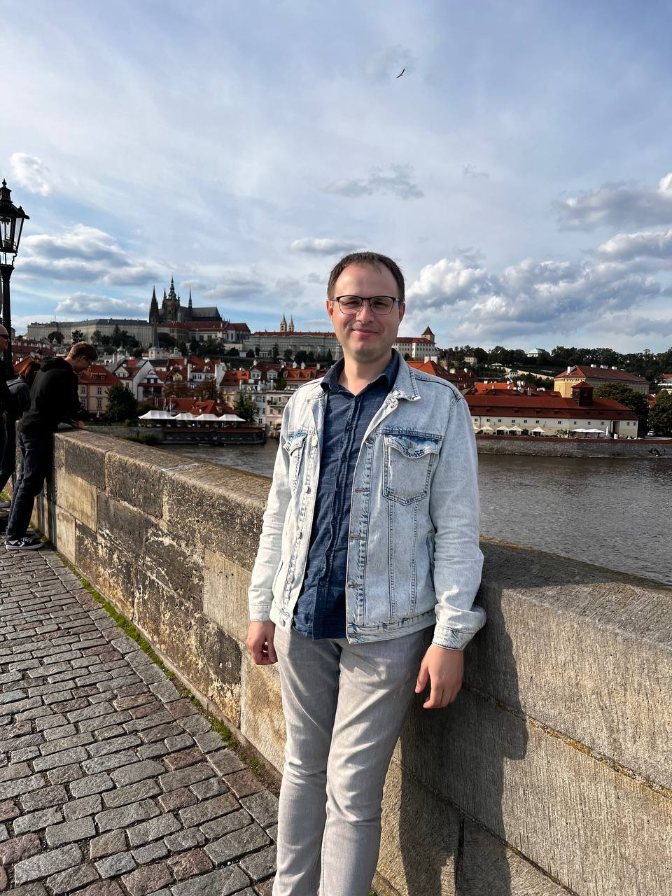

Evgheni Bozbei
">
Summary
A bright, talented and self-motivated QA analyst who has excellent organizational skills, is highly efficient and has a good eye for detail. Has extensive experience of assisting in the development and upgrading of database systems and analytical techniques. Able to play a key role in analyzing problems and come up with creative solutions as well as producing methodologies and files for effective data management. A quick learner who can absorb new ideas and can communicate clearly and effectively.
Education
- Moldavian State University (2012-2016)
- Specialty: Information Technologies
Work experience
- Software QA Engineer, The Customization Group
August 2022 - present
- Reporting and documenting technical issues in our web shops and production control systems
- Involved into a B2B/B2C projects development for a multinational corporation
- Software QA Engineer, Avantaj Prim
August 2018 – December 2021
- Review system requirements specification, features descriptions and present test scenarios
- Perform manual, acceptance, regression, positive and negative, usability, localization testing
- Product Quality Specialist, Katoen Natie
March 2016 - August 2017
- Coordinated the flow of documents and information surrounding any request for a change in the WMS
- Generated assessment plans and time/cost estimates
Skills
- Languages: Russian (native), English, Romanian
- Strong results-orientation combined with excellent judgement and problem-solving skills
- Extensively developed analytical, evaluation, critical thinking, and critique
Contact me